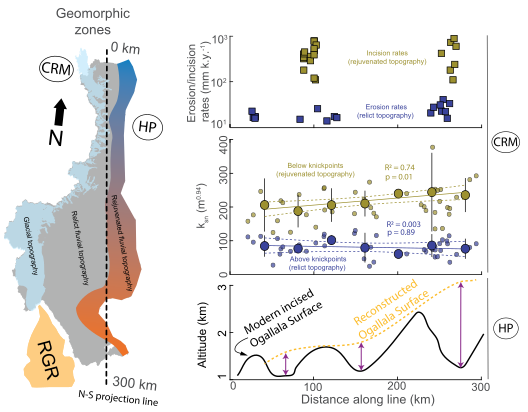
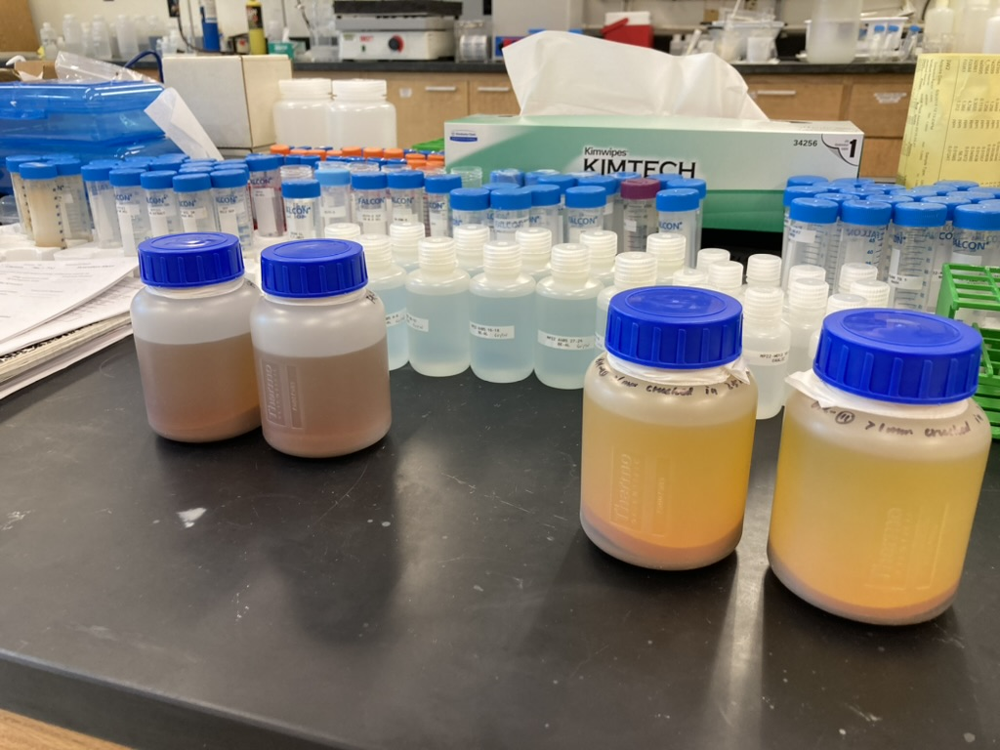

Soils
In preparationTracing soil redistribution in Midwestern croplands with cesium-137, terrain analysis, and transport models.
Published background · Thaler et al. · Earth’s Future, 2022
© The Authors · CC BY-NC · Credits & reuse
I explore landscapes from soil particles to planetary drainage, linking tectonics and climate with biodiversity and carbon.
Landscape evolution & biodiversity
Terrain, rainfall, and simulated species evolve together in an idealized mountain landscape. Colored populations spread and become isolated as the landscape changes.
Explore the Science studyModel animation · Eyal Marder · Full credit
Tracing soil redistribution in Midwestern croplands with cesium-137, terrain analysis, and transport models.
Published background · Thaler et al. · Earth’s Future, 2022
© The Authors · CC BY-NC · Credits & reuse

Connecting uplift, habitat connectivity, dispersal, and biodiversity through coupled models.
Marder et al. · Science, 2025
© 2025 The Authors; exclusive licensee AAAS · Credits & reuse

Using rivers, terraces, and erosion rates to investigate tectonics and landscape change.
Marder et al. · GSA Today, 2025
© 2025 The Authors · CC BY-NC · Credits & reuse

Examining how rock properties and erosion connect to weathering and carbon exchange.
Marder et al. · Science Advances, 2026
© 2026 The Authors; exclusive licensee AAAS · Credits & reuse

Comparing drainage-network geometry to investigate runoff across planetary settings.
Earth–Mars geometry comparison · Manuscript in review
© Eyal Marder · Figure credit
One shared question: how does landscape change reshape the movement, storage, and connections of sediment, water, carbon, and organisms?
Explore connections & guided figures
In situ and meteoric ¹⁰Be connect my field observations with the rates and histories of landscape change.
Explore lab work & methodsPhoto © Eyal Marder · Isaac Larsen’s lab, UMass Amherst